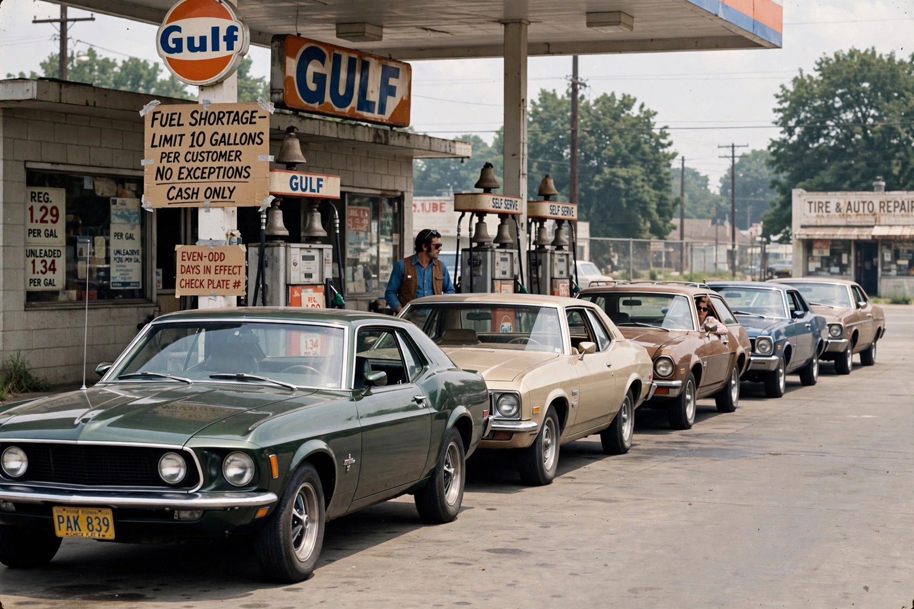

1979 oil crisis

The 1979 oil crisis was the second great oil shock of the 1970s. The Iranian Revolution disrupted Iranian oil production in late 1978 and early 1979, and although the lost volume was partly replaced by other producers, panic buying on world markets drove the price of oil from about US$14 per barrel to over US$30 by 1980 — more than doubling in a year. See also the 1973 oil crisis.
In the United States the shock brought back petrol queues and rationing schemes; around the world it deepened inflation and pushed major economies toward recession.
Causes
The Shah of Iran was driven from power in January 1979; strikes had already shut much of Iran's oil industry, cutting exports from one of the world's largest producers. Saudi Arabia and others raised output, but refiners and governments, fearing shortage, bid aggressively for spot cargoes and built stocks, multiplying a modest physical shortfall into a price explosion. Iraq's invasion of Iran in September 1980 then knocked out both countries' exports and extended the high-price era.
Responses and aftermath
Governments tightened efficiency standards (the US corporate average fuel economy rules date from this era), filled strategic reserves, and expanded the International Energy Agency's emergency system. President Jimmy Carter framed energy as 'the moral equivalent of war' and installed solar panels on the White House; his successor Ronald Reagan had them removed.
High prices eventually cured themselves: conservation, new supply from Alaska, the North Sea and Mexico, and recession cut demand, and by 1986 prices collapsed, inaugurating a long era of cheaper oil. The two shocks together permanently changed {L('Energy_policy')} and the world's car fleet.
See also: 1973 oil crisis · Oil price · Petroleum · Energy policy · OPEC